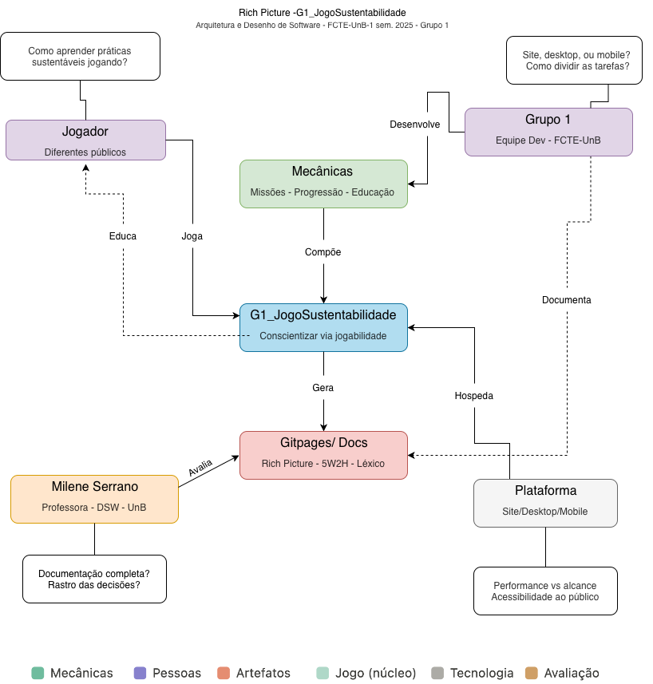
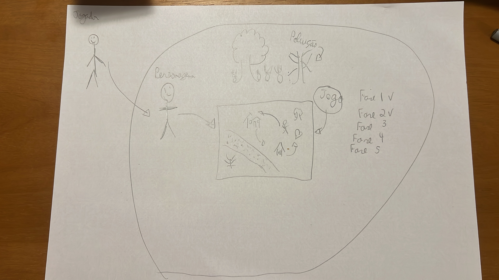
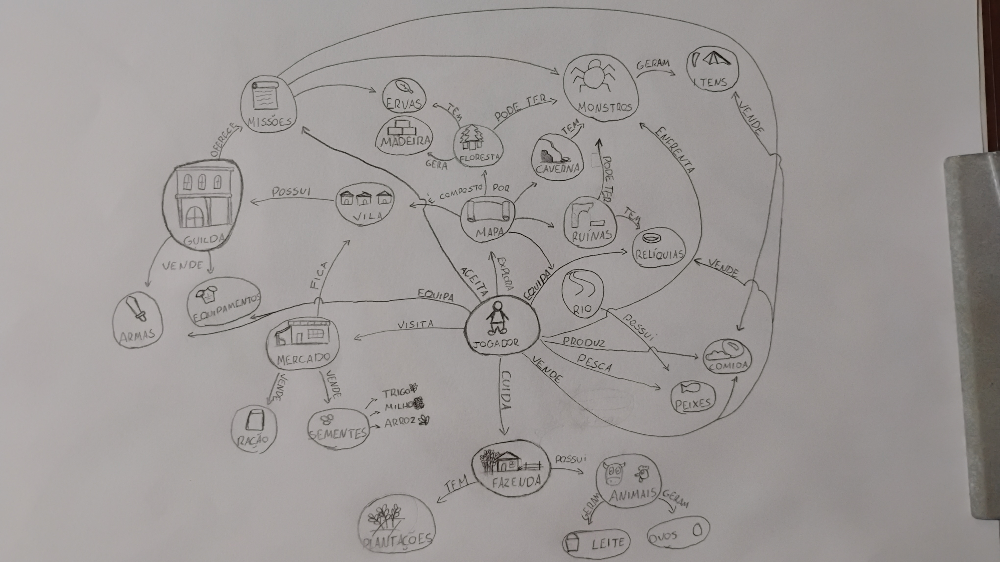
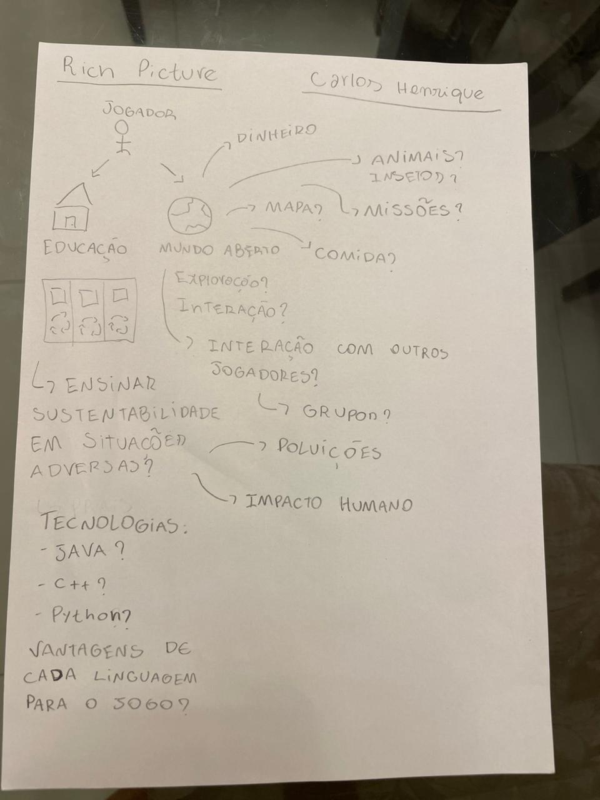
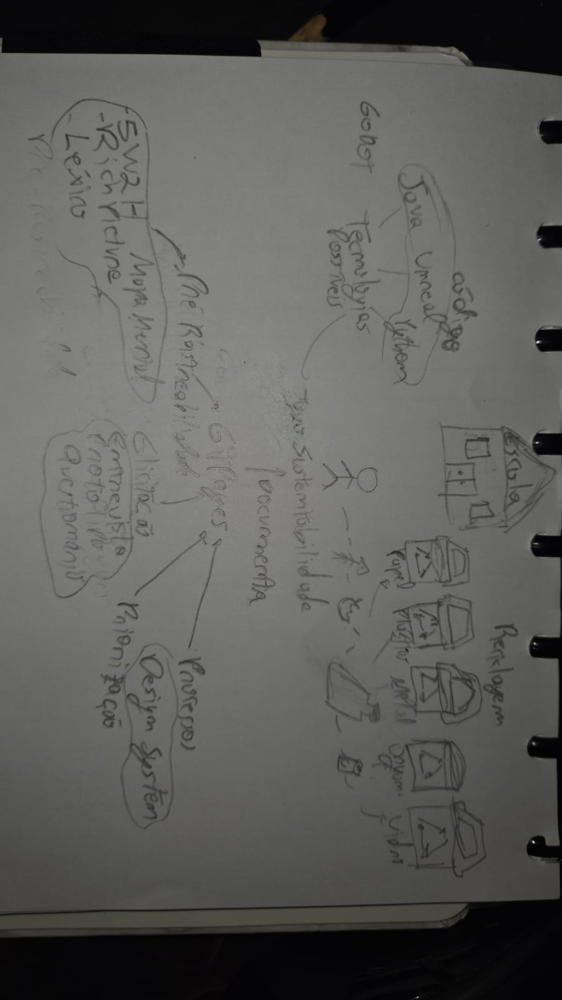
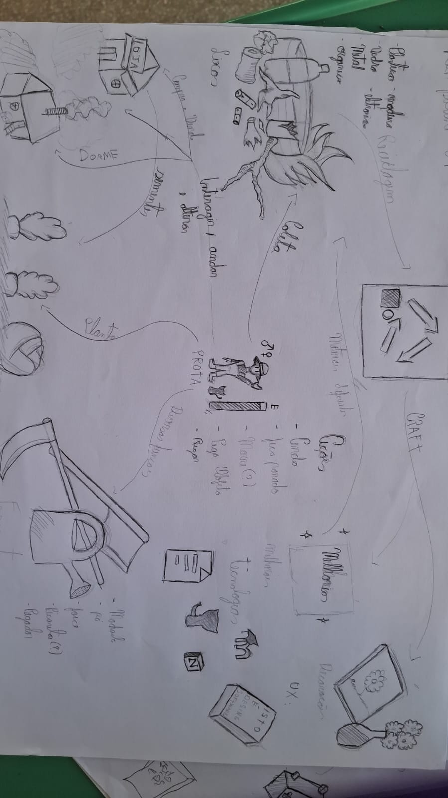
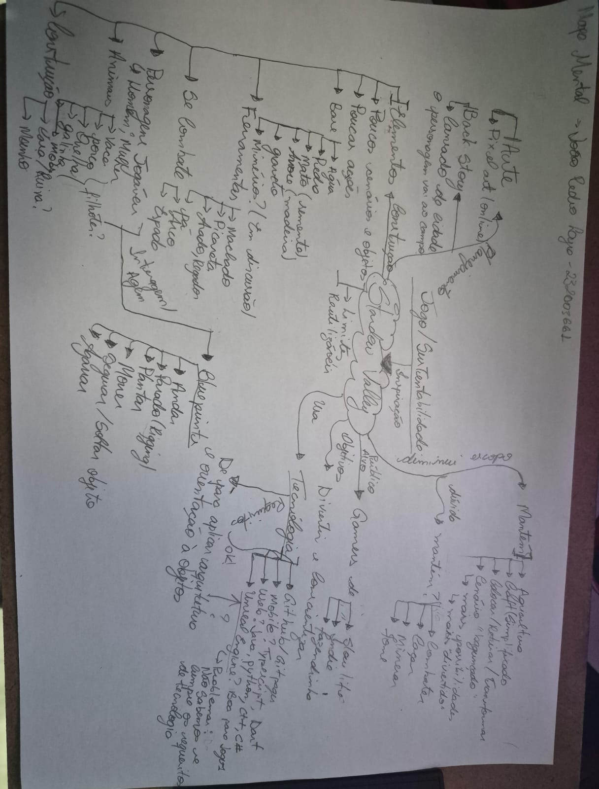
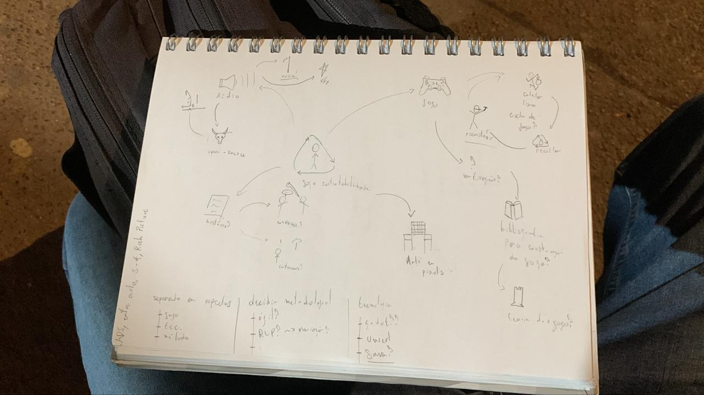
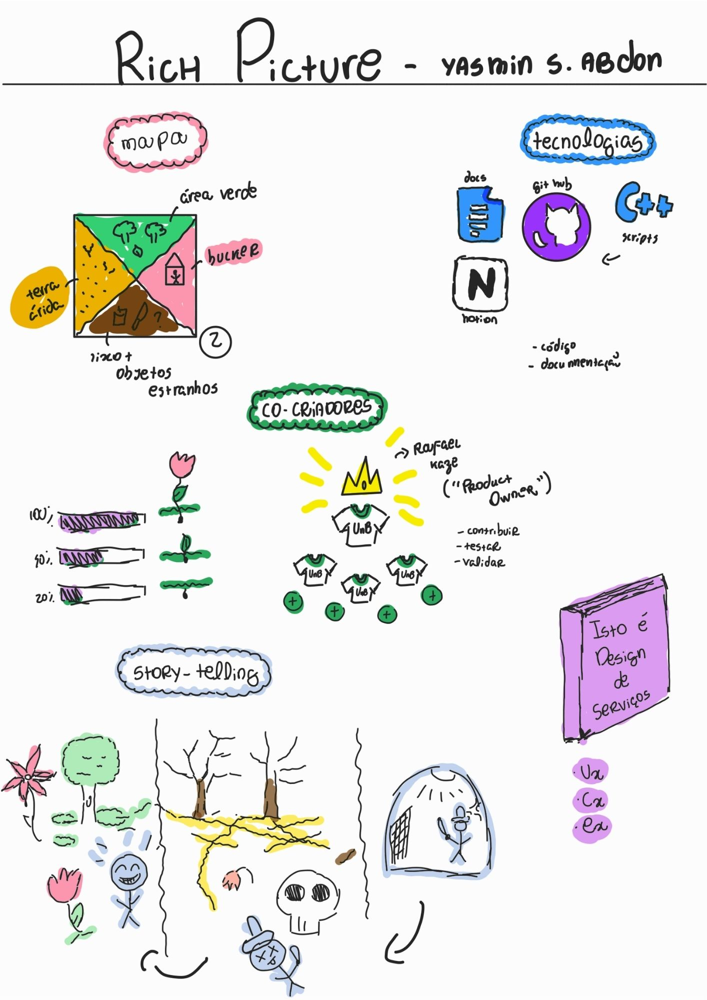

Esboçar¶
Introdução¶
Depois de um dia inteiro de compreensão do problema e de escolha de um alvo para o sprint, o segundo dia foca em buscar soluções. O dia começa com inspiração: uma revisão das ideias existentes para remixar e melhorar. Em seguida, cada pessoa esboça soluções seguindo um processo de quatro etapas que enfatiza o pensamento crítico sobre a arte.
Metodologia¶
A etapa de Esboçar foi conduzida com base em uma Adaptação Estratégica do Design Sprint, inspirada na metodologia da Google Ventures e ajustada ao contexto do projeto G1_JogoSustentabilidade. As atividades foram realizadas de forma colaborativa, com a participação dos membros da equipe, em sessão realizada de forma remota.
Informações da Sessão¶
- Data de Realização: 24/03/2026
- Horário de Início: 20:30
- Horário de Término: 21:40
- Duração: 1 hora e 10 minutos
- Participantes: Carlos, Daniel, Guilherme, Heyttor, João, Matheus, Yasmin
- Faltas: Gabriel, José, Ryan
Ferramentas Utilizadas¶
As seguintes ferramentas viabilizaram a realização desta etapa de forma remota:
- Comunicação em tempo real: Google Meet
- Apresentação e compartilhamento dos esboços: compartilhamento de tela
- Criação de Rich Picture: papel A4, papel de caderno e lápis, aplicativo de desenho digital, Draw.io
Atividades Realizadas¶
1. Apresentação dos Rich Pictures¶
Cada integrante presente apresentou seu Rich Picture desenvolvido individualmente, expondo sua visão de solução para o problema definido no Dia 1.
2. Definição do Conceito do Jogo¶
A partir das propostas apresentadas, a equipe debateu e consolidou o conceito central do jogo. Foram discutidos tema, mecânicas e público-alvo.
3. Alinhamento de Escopo¶
A equipe discutiu os limites do projeto para evitar excesso de funcionalidades.
4. Decisões de Tecnologia e Organização¶
Foram tomadas decisões iniciais sobre a stack tecnológica e a estrutura organizacional da equipe.
Artefatos Gerados¶
Rich Picture - José Oliveira¶

Rich Picture - Gabriel Mendes¶

Rich Picture - Matheus¶

Rich Picture - Carlos¶

Rich Picture - Guilherme¶

Rich Picture - Heyttor¶

Mapa Mental - João¶

Rich Picture - Ryan¶

Rich Picture - Yasmin¶

Referências¶
KNAPP, Jake; ZERATSKY, John; KOWITZ, Braden. Sprint: How to Solve Big Problems and Test New Ideas in Just Five Days. Simon & Schuster, 2016. (Utilizado como inspiração teórica para a adaptação do método; não como manual de execução direta.)
Google Ventures. The Design Sprint. Disponível em: https://www.gv.com/sprint/. Acesso em: 29 mar. 2026. (Referência metodológica original; o processo adotado neste projeto constitui uma adaptação.)
Histórico de versão¶
| Versão | Data | Descrição | Autor | Revisor |
|---|---|---|---|---|
| 1.0 | 29/03/2026 | Criação da página | Gabriel Mendes | |
| 1.1 | 03/04/2026 | Adicionando meu rich picture | Yasmin Abdon | |
| 1.3 | 04/04/2026 | Preenchimento das informações da sessão conforme Ata 2, ajustes e correções nos rich pictures, correção dos nomes dos autores e indicações sobre o uso de mapa mental | Carlos e João Pedro | |
| 2.0 | 04/04/2026 | Correção da metodologia, substituição das atividades realizadas conforme Ata 24/03, adição de ferramentas utilizadas, e atualização das referências | Guilherme Zanella |